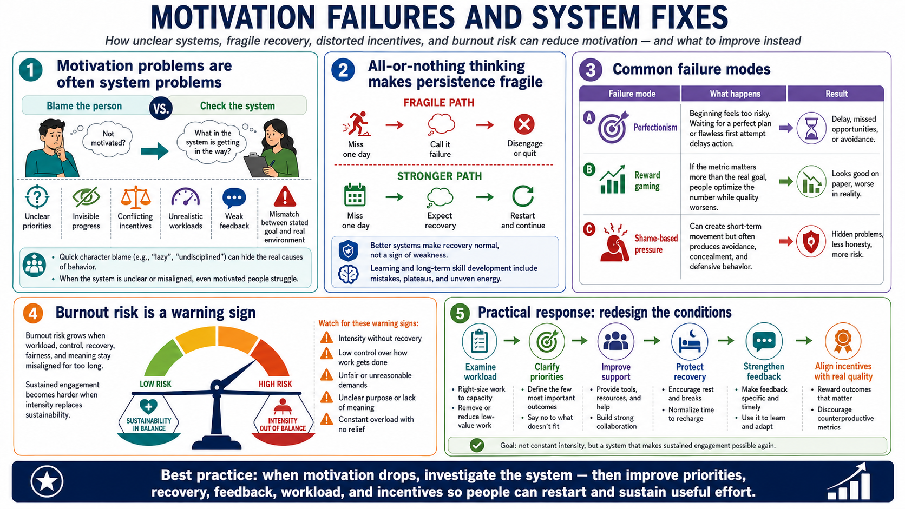

Motivation Failure Modes
Connecting to LMS... Progress: in progress

Narration
Motivation problems are often system problems, not character flaws. When people struggle to start or continue, the cause may be unclear priorities, invisible progress, conflicting incentives, unrealistic workloads, weak feedback, or a mismatch between the stated goal and the real environment. Blaming character too quickly can prevent teams from fixing the conditions that are actually shaping behavior.
One common failure mode is all-or-nothing thinking. If a person treats one missed day, one weak attempt, or one setback as total failure, persistence becomes fragile. Better systems make recovery expected. They help people restart without needing a perfect streak. This is especially important for learning and long-term skill development, where progress usually includes mistakes, plateaus, and uneven energy.
Perfectionism can also block motivation by making the first step feel too risky. If the standard for beginning is a perfect plan or a flawless first attempt, people may delay action. Reward gaming is another failure mode. If the metric matters more than the real goal, people may optimize for the number while the underlying quality gets worse. Shame-based pressure can create movement, but it often produces avoidance and concealment.
At a non-clinical level, burnout risk is a warning sign that intensity has replaced sustainability. When workload, control, recovery, fairness, and meaning are badly misaligned for too long, motivation can become harder to access. The practical response is not to demand constant intensity. It is to examine workload, priorities, support, recovery, and incentives so that sustained engagement becomes possible again.